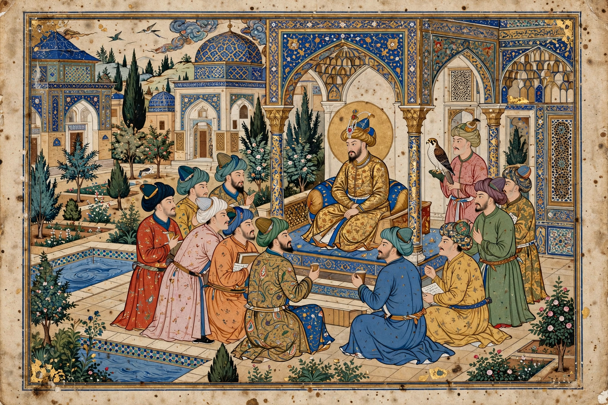

Behzad
Kamāl ud-Dīn Behzād (c. 1450 – c. 1535), also spelled Bihzad, was a Persian painter and head of the royal ateliers, widely regarded as the most famous and influential master of the Persian miniature tradition. His work marked a peak of the Herat school under the Timurids and continued under the Safavids.
| Behzad | |
|---|---|
 | |
| Born | c. 1450, Herat |
| Died | c. 1535, Herat/Tabriz |
| Known for | Persian miniature painting |
| Patrons | Husayn Bayqara; Shah Ismail I |
Life and career
Orphaned young, Behzad was raised by the painter Mirak Naqqash and studied in Herat at the court of Sultan Husayn Bayqara, whose vizier, the poet Mir Ali Shir Nava'i, was a great patron. After the Uzbek and then Safavid conquests, Shah Ismail I took him to Tabriz, appointing him head of the royal library/atelier in 1522. He trained generations of pupils and his style spread across Persian, Mughal and Ottoman painting.
Style and works
Behzad brought unprecedented naturalism, balanced multi-figure composition, vivid colour and lively observation of everyday life — builders, dervishes, courtiers — to manuscript illustration. Famous works include illustrations to the Bustan of Sa'di (1488, Cairo), the Zafarnama (Timur's history), a Khamsa of Nizami (1490s, British Library) and the portrait-like 'Seduction of Yusuf' scene. Many attributions are debated, as atelier works were collaborative and later copies numerous.
See also
Recreated from memory for muse-webcrawl.